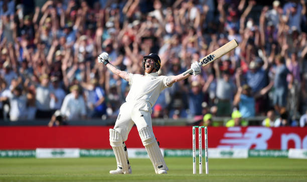
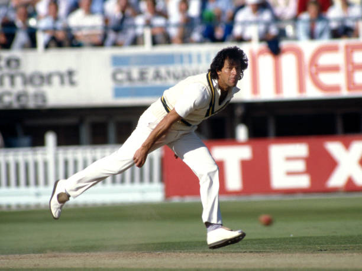
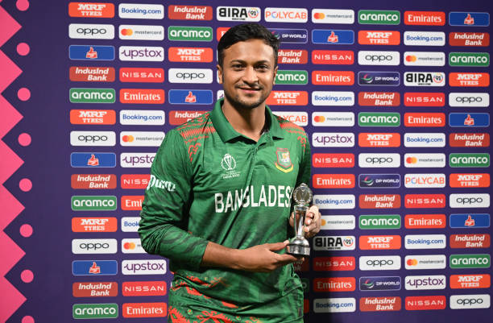
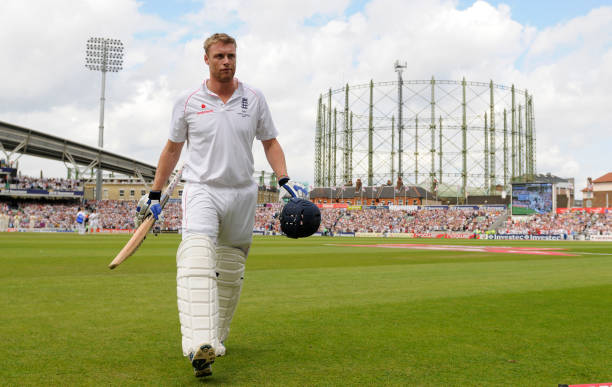
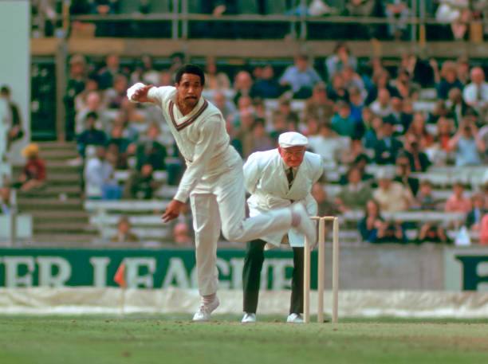
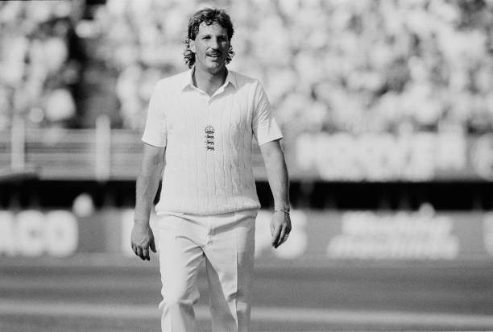
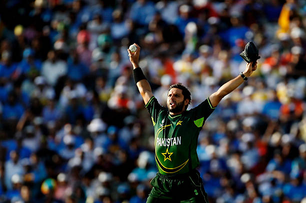
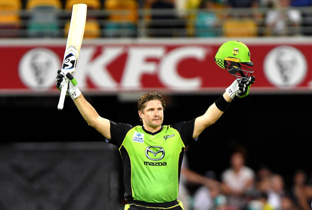
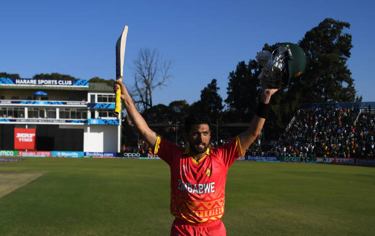

CRICKBOYZ
Website Created by: MAHIR CHAVDA
" THEY ARE NOT IN ANY PARTICULAR ORDER, THEY ARE ALL GREAT PLAYERS."
1.JACQUES KALLIS

Full Name: Jacques Kallis
Date of Birth: 16 October 1975
Birthplace: South Africa
Nationality: South African
Role: All-rounder
Batting Style: Right-handed
Nickname: Kallis
- Kallis is one of the greatest all-rounders.
- He scored over 25,000 international runs.
- He took more than 500 wickets.
- He was very consistent.
- Kallis was strong in Test cricket.
- He played many match-winning innings.
- He is a South African legend.
2.KAPIL DEV

Full Name: Kapil Dev Ramlal Nikhanj
Date of Birth: 6 January 1959
Birthplace: Chandigarh, India
Role: Fast Bowling All-rounder
Batting Style: Right-handed
Nickname: Haryana Hurricane
- Kapil Dev is one of the greatest all-rounders in cricket history.
- He led India to its first Cricket World Cup victory in 1983.
- He was known for powerful batting and fast bowling.
- Kapil Dev took more than 400 wickets in Test cricket.
- He played many match-winning innings.
- He is a legend of Indian cricket.
3. HARDIK PANDYA

Full Name: Hardik Himanshu Pandya
Date of Birth: 11 October 1993
Birthplace: Gujarat, India
Nationality: Indian
Role: All-rounder
Batting Style: Right-handed
Nickname: Kung Fu Pandya
- Hardik Pandya is known for his explosive batting.
- He is also an effective medium-fast bowler.
- Hardik has played many match-winning innings for India.
- He is one of the most dynamic players in modern cricket.
- Hardik is very aggressive.
- He is a key player in T20 cricket.
- He has captained IPL teams.
- He is one of India’s best modern all-rounders.
4.RAVINDRA JADEJA

Full Name: Ravindra Jadeja
Date of Birth: 6 December 1988
Birthplace: Gujarat, India
Role: Spin Bowling All-rounder
Batting Style: Left-handed
Nickname: Sir Jadeja
- Ravindra Jadeja is one of the best fielders in world cricket.
- He is known for accurate left-arm spin bowling.
- Jadeja has scored many important runs for India.
- He plays a crucial role in all formats of cricket.
- He is a match-winner for India.
- He performs well in all formats.
- He is a complete all-rounder.
5. RAVICHANDRAN ASHWIN

Full Name: Ravichandran Ashwin
Date of Birth: 17 September 1986
Birthplace: Chennai, India
Role: Spin Bowling All-rounder
Batting Style: Right-handed
Nickname: Ash
- Ashwin is one of the most successful spin bowlers in India.
- He has taken more than 400 wickets in Test cricket.
- He is also capable of scoring valuable runs.
- Ashwin is known for his smart bowling strategies.
- Ashwin performs well in Tests.
- He is very experienced.
- He is a match-winner for India.
6. IRFAN PATHAN

Full Name: Irfan Khan Pathan
Date of Birth: 27 October 1984
Birthplace: Gujarat, India
Role: Fast Bowling All-rounder
Batting Style: Left-handed
Nickname: Irfan
- Irfan Pathan was one of India's best swing bowlers.
- He is famous for taking a hat-trick in the first over of a Test match.
- He was a key player in India's 2007 T20 World Cup victory.
- He was a key player in 2007 T20 World Cup.
- He could bat well under pressure.
- He played many match-winning performances.
- He was an important all-rounder.
- He is loved by cricket fans.
7. Ben Stokes

Full Name: Benjamin Andrew Stokes
Date of Birth: 4 June 1991
Birthplace: Christchurch, New Zealand
Nationality: English
Role: All-rounder
Batting Style: Left-handed
Nickname: Stokesy
- Stokes is one of the best modern all-rounders.
- He played a key role in the 2019 World Cup final.
- He is known for match-winning performances.
- He bowls effective medium pace.
- He is aggressive and fearless.
- He performs under pressure.
- He is a true match-winner.
8. Imran Khan

Full Name: Imran Ahmed Khan Niazi
Date of Birth: 5 October 1952
Birthplace: Lahore, Pakistan
Nationality: Pakistani
Role: All-rounder
Batting Style: Right-handed
Nickname: Kaptaan
- Imran Khan is one of the greatest all-rounders.
- He led Pakistan to the 1992 World Cup win.
- He was a world-class fast bowler.
- He was a dependable batsman.
- He inspired his team with leadership.
- He was very aggressive.
- He is a legend.
9. Shakib Al Hasan

Full Name: Shakib Al Hasan
Date of Birth: 24 March 1987
Birthplace: Magura, Bangladesh
Nationality: Bangladeshi
Role: All-rounder
Batting Style: Left-handed
Nickname: Shakib
- Shakib is one of the best all-rounders in modern cricket.
- He performs in all formats.
- He is a top-class spinner.
- He is a reliable batsman.
- He has achieved top ICC rankings.
- He is Bangladesh’s best player.
- He is a match-winner.
10. Andrew Flintoff

Full Name: Andrew Flintoff
Date of Birth: 6 December 1977
Birthplace: Preston, England
Nationality: English
Role: All-rounder
Batting Style: Right-handed
Nickname: Freddie
- Flintoff was one of England’s best all-rounders.
- He played a key role in the 2005 Ashes.
- He was a powerful batsman.
- He was a strong fast bowler.
- He was very aggressive on the field.
- He inspired his team.
- He is a match-winner.
11. Garfield Sobers

Full Name: Sir Garfield Sobers
Date of Birth: 28 July 1936
Birthplace: Barbados
Nationality: West Indies
Role: All-rounder
Batting Style: Left-handed
Bowling Style: Right-arm medium / Left-arm spin
Nickname: Sobers
- Sobers is one of the greatest all-rounders ever.
- He could bat, bowl, and field brilliantly.
- He scored 365* in Test cricket.
- He bowled both pace and spin.
- He dominated world cricket in his era.
- He is a true legend of the game.
- He inspired many cricketers.
12. Ian Botham

Full Name: Ian Terence Botham
Date of Birth: 24 November 1955
Birthplace: England
Nationality: English
Role: All-rounder
Batting Style: Right-handed
Bowling Style: Right-arm fast-medium
Nickname: Beefy
- Botham was a match-winner for England.
- He excelled in both batting and bowling.
- He played a key role in Ashes 1981.
- He scored many important centuries.
- He took over 300 Test wickets.
- He played aggressive cricket.
- He is an England legend.
13. Shahid Afridi

Full Name: Shahid Khan Afridi
Date of Birth: 1 March 1980
Birthplace: Pakistan
Nationality: Pakistani
Role: All-rounder
Batting Style: Right-handed
Bowling Style: Leg spin
Nickname: Boom Boom
- Afridi was famous for explosive batting.
- He scored one of the fastest centuries.
- He was a great leg-spinner.
- He won many matches for Pakistan.
- He was loved by fans worldwide.
- He played aggressive cricket.
- He is a T20 legend.
14. Shane Watson

Full Name: Shane Robert Watson
Date of Birth: 17 June 1981
Birthplace: Australia
Nationality: Australian
Role: All-rounder
Batting Style: Right-handed
Bowling Style: Right-arm fast-medium
Nickname: Watto
- Watson was a key Australian player.
- He contributed in both batting and bowling.
- He played match-winning IPL innings.
- He was a powerful hitter.
- He took important wickets.
- He was a reliable all-rounder.
- He won many trophies.
15. Sikandar Raza

Full Name: Sikandar Raza Butt
Date of Birth: 24 April 1986
Birthplace: Zimbabwe
Nationality: Zimbabwean
Role: All-rounder
Batting Style: Right-handed
Bowling Style: Off-spin
Nickname: Siku
- Raza is Zimbabwe’s top all-rounder.
- He performs well in all formats.
- He is a consistent batsman.
- He takes important wickets.
- He plays aggressively.
- He leads from the front.
- He is a match-winner.
16. Mohammad Nabi

Full Name: Mohammad Nabi
Date of Birth: 1 January 1985
Birthplace: Afghanistan
Nationality: Afghan
Role: All-rounder
Batting Style: Right-handed
Bowling Style: Off-spin
Nickname: Nabi
- Nabi is Afghanistan’s most experienced player.
- He is a reliable all-rounder.
- He plays well in T20 leagues.
- He bowls tight off-spin.
- He contributes with the bat.
- He leads the team effectively.
- He is a match-winner.
17. Daniel Vettori

Full Name: Daniel Luca Vettori
Date of Birth: 27 January 1979
Birthplace: New Zealand
Nationality: New Zealander
Role: All-rounder
Batting Style: Left-handed
Bowling Style: Left-arm spin
Nickname: Vettori
- Vettori was a smart left-arm spinner.
- He also contributed with the bat.
- He captained New Zealand team.
- He was very economical bowler.
- He played in all formats.
- He was a consistent performer.
- He is respected worldwide.
18. Yuvraj Singh

Full Name: Yuvraj Singh
Date of Birth: 12 December 1981
Birthplace: Chandigarh, India
Nationality: Indian
Role: All-rounder
Batting Style: Left-handed
Bowling Style: Left-arm spin
Nickname: Yuvi
- Yuvraj was a match-winner for India.
- He hit six sixes in one over.
- He was Player of the Tournament in 2011 WC.
- He was a powerful batsman.
- He contributed with spin bowling.
- He was a brilliant fielder.
- He is an Indian legend.
19. Dwayne Bravo

Full Name: Dwayne John Bravo
Date of Birth: 7 October 1983
Birthplace: West Indies
Nationality: West Indian
Role: All-rounder
Batting Style: Right-handed
Bowling Style: Right-arm medium
Nickname: DJ Bravo
- Bravo is famous for death bowling.
- He is a T20 specialist.
- He scored useful runs.
- He played many leagues worldwide.
- He is also a singer.
- He won many IPL titles.
- He is very popular.
20. Rashid Khan

Full Name: Rashid Khan
Date of Birth: 20 September 1998
Birthplace: Afghanistan
Nationality: Afghan
Role: All-rounder
Batting Style: Right-handed
Bowling Style: Leg spin
Nickname: Rashid
- Rashid is one of the best T20 bowlers.
- He bowls deadly leg spin.
- He can hit big shots.
- He plays leagues worldwide.
- He is very consistent.
- He is a match-winner.
- He is a young superstar.
21. Glenn Maxwell

Full Name: Glenn James Maxwell
Date of Birth: 14 October 1988
Birthplace: Australia
Nationality: Australian
Role: All-rounder
Batting Style: Right-handed
Bowling Style: Off-spin
Nickname: Maxi
- Maxwell is known for explosive batting.
- He plays innovative shots.
- He bowls useful spin.
- He is a great fielder.
- He is a T20 star.
- He wins matches single-handedly.
- He is very entertaining.
22. Andre Russell

Full Name: Andre Dwayne Russell
Date of Birth: 29 April 1988
Birthplace: Jamaica
Nationality: West Indian
Role: All-rounder
Batting Style: Right-handed
Bowling Style: Right-arm fast
Nickname: Dre Russ
- Russell is one of the most powerful hitters.
- He bowls fast and aggressive.
- He is a T20 superstar.
- He wins matches quickly.
- He plays in many leagues.
- He is very dangerous player.
- He is loved by fans.
23. Suresh Raina

Full Name: Suresh Kumar Raina
Date of Birth: 27 November 1986
Birthplace: India
Nationality: Indian
Role: All-rounder
Batting Style: Left-handed
Bowling Style: Off-spin
Nickname: Chinna Thala
- Raina was a key player for India.
- He was excellent in T20 cricket.
- He was a brilliant fielder.
- He scored many important runs.
- He played for CSK in IPL.
- He bowled part-time spin.
- He is a fan favorite.
24. Sunil Narine

Full Name: Sunil Philip Narine
Date of Birth: 26 May 1988
Birthplace: Trinidad
Nationality: West Indian
Role: All-rounder
Batting Style: Left-handed
Bowling Style: Off-spin
Nickname: Narine
- Narine is a mystery spinner.
- He is very effective in T20 cricket.
- He also opens batting in IPL.
- He bowls economically.
- He plays for KKR.
- He is a match-winner.
- He is very consistent.
25. Yusuf Pathan

Full Name: Yusuf Khan Pathan
Date of Birth: 17 November 1982
Birthplace: India
Nationality: Indian
Role: All-rounder
Batting Style: Right-handed
Bowling Style: Off-spin
Nickname: Yusuf
- Yusuf was known for powerful hitting.
- He played match-winning innings.
- He was part of IPL winning teams.
- He bowled useful spin.
- He played for India.
- He was aggressive player.
- He is remembered for big shots.